Оглавление
1. Общие сведения о пользовательском интерфейсе программы 3
2. Запуск программы «Моделирование нечетких когнитивных карт» 3
3. Основное окно программы 3
4. Пункт «количество вершин» 4
5. Графа «название вершин» 4
6. Графа «Начальное значение» 4
7. Графа выходное значение 4
8. Окно «Веса» 4
9. Окно «Настройки» 5
10. Окно «Отчет» 7
Просмотр таблицы результата 7
Просмотр графика 8
Просмотр графа 9
11. Сохранение результатов расчетов 9
12. Количество итераций вычисления 11
13. Сохранение графика в формате .png 11
1. Общие сведения о пользовательском интерфейсе программы
Программа «Моделирование нечетких когнитивных карт» предназначена для пользователей, имеющих потребность в анализе влияния различных факторов на эффективность выработки электроэнергии и построение на основании этих данных графика и таблицы.
2. Запуск программы
Для запуска программы «Моделирование нечетких когнитивных карт» дважды кликните на установочный файл программы setup.exe, далее вас будет приветствовать стандартный менеджер установки. Указав все необходимые параметры установки, нажмите кнопку «готово» по завершению процесса. После установки приложения на ваш компьютер, запустите приложение, кликнув дважды на ярлык программы, сразу после выполнения данных действий программа будет запущена.
3. Основное окно программы
После успешной установки и запуска открывается основное окно программы.
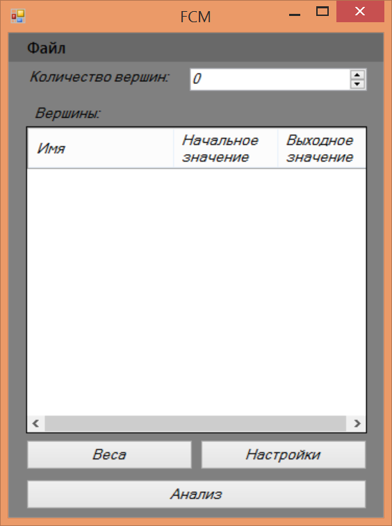
Рис. 1 Основное окно программы
4. Пункт «количество вершин»
Кол-во вершин – это то количество параметров, которые вы желаете задать, ввод значений осуществляется непосредственно с клавиатуры, либо с использованием поля со счетчиком. При этом, согласно выбранному количеству вершин автоматически создаются поля для ввода начальных значений и названий вершин.
5. Графа «название вершин»
Столбец название вершин - введите текстовое значение непосредственно с клавиатуры в ячейку, которая соотвествует данной вершине.
6. Графа «Начальное значение»
Столбец начальное значение - введите числовое значение непосредственно с клавиатуры в ячейку, которая соотвествует данной вершине. Также, у вас имеется возможность считать указанные в п.5 и в п.6 из файла (формат .csv).
7. Графа выходное значение
Укажите нужно ли сохранять выходное значение для данного параметра.
8. Окно «Веса»
Для задания весов конретным вершинам, нажмите на кнопку «веса», вы перейдете на новое окно программы «веса». Это окно в котором пользователь имеет возможность задать вес вершины (ввод числового значения в ячейку, соответствующую конкретной вершине).
Используемые элементы:
- Управляющая кнопка «Применить» - сохранение внесенных изменеий
- Управляющая кнопка «Отмена» - отмена сохранения внесенных изменений
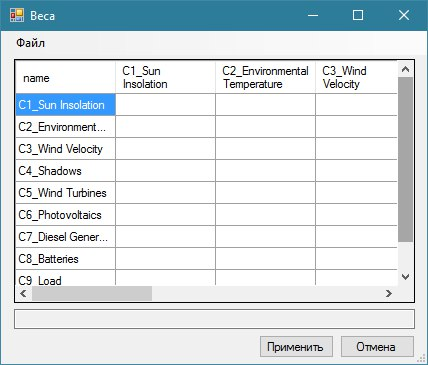
Рис. 2 Экарнная форма окна «Веса»
9. Окно «Настройки»
Окно в котором вы имеете возможность изменить интересующие вас параметры анализа.
Используемые элементы:
- Выпадающий список – используется для выбора функции (рис.6):
sigmoid(x) Сигмоидальная функция
gaussmf(x) Гауссова функция
- Выбор элемемента из указанных - используется для выбора вида аргумента функции.
- Поле ввода со счетчиком - используется для ввода значений k1, k2 и feedback (ввод непосредственно с клавиатуры, либо через счетчик)
- Флажки - используются для указания предпочтений о сохранении результатов работы программы:
- Сохранение в формате .xls
- Расширенный отчет (подробный)
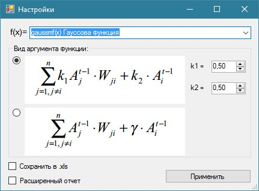
Рис.3 Экарнная форма окна «Настройки»
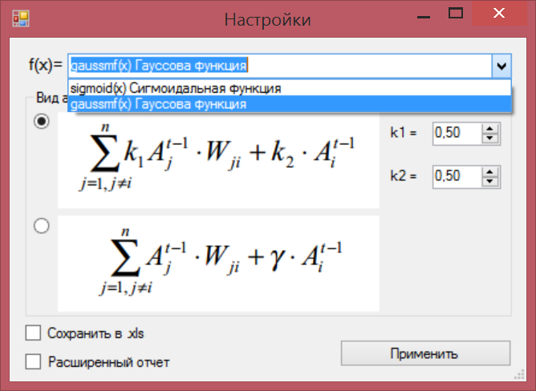
Рис.4 Выпадающий список окна «Настройки»
Для просмотра результата анализа, вы можете кликнуть на кнопку «Анализ», находящуюся на главном экране приложения. После этого откроется новое окно «отчет», тут вы имеете возможность увидеть полученные в результате работы программы итоги. В данном окне отображается таблица результата, итоговый график и граф.
Просмотр таблицы результата
Сразу, после перехода на окно «отчет» вы увидите таблицу результатата
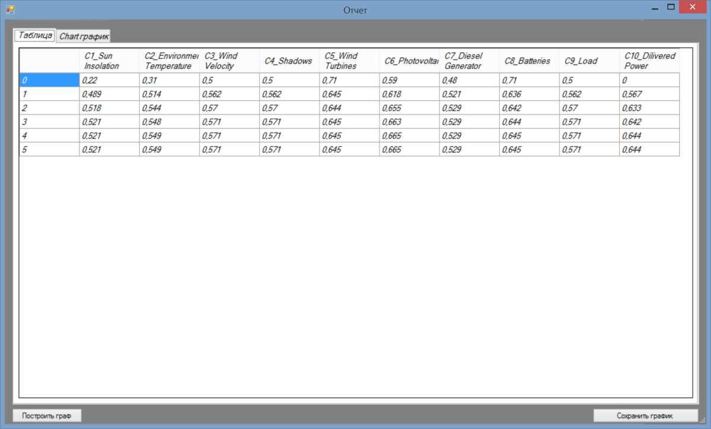
Рис.5 Экранная форма окна «Отчет» с демонстрацией таблицы результата
Просмотр графика
Для просмотра гравика, перейдите на вкладку «Chart график»
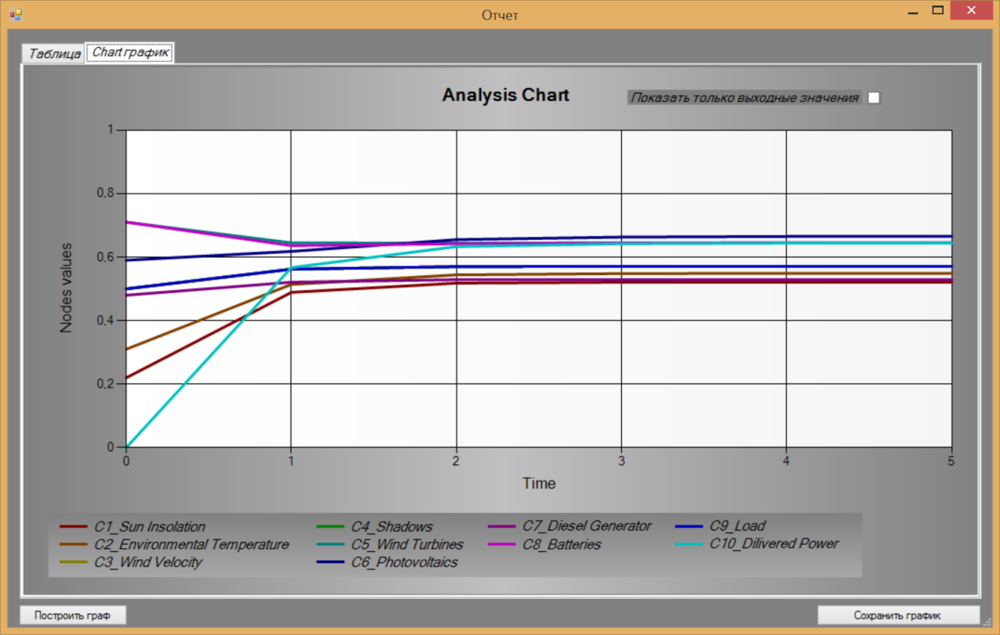
Рис.6 Экранная форма окна «Отчет» с демонстрацией итогового графика
Просмотр графа
Для просмотра графа, нажмите на кнопку «построить граф», находящейся на окне «отчет».
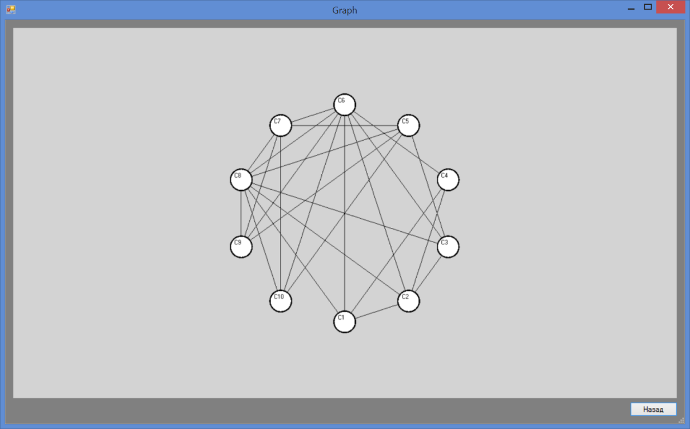
Рис.7 Экранная форма окна «Отчет» с демонстрацией графа
Для выхода из режима просмотра графа, нажмите кнопку «назад»
11. Сохранение результатов расчетов
Вы можете сохранить результаты анализа, для этого следует установить галочку «Сохранить в .xls», также вы можете сохранить расширенный отчет, для чего нужно установить галочку «Расширенный отчет». Последний отличается тем, что в него выводятся значения параметров на каждой итерации, в сокращенный - только значения последней.
После указанных действий нажать на кнопку «применить», и укажите путь сохранения файла. Указанные действия должны выполняться на окне приложения «Настройки».
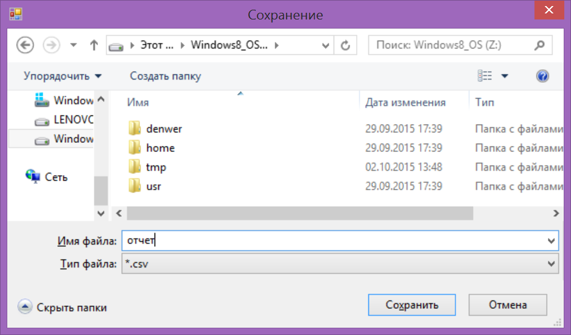
Рис. 8 Сохранение отчета
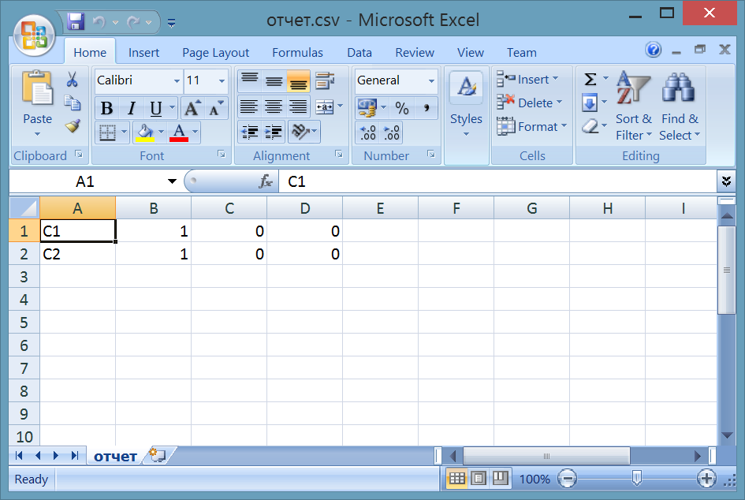
Рис. 9 Сохраненный отчет
12. Количество итераций вычисления
Пользователю важно знать, что вычисления производятся до тех пор, пока значение параметра в следующий момент времени не будет отличаться от значения в текущий момент.
13. Сохранение графика в формате .png
Для сохранения графика в формате .png необходимо нажать на кнопку «сохранить график» на окне просмотра результатов. После чего необходимо выбрать путь сохранения файла и нажать «сохранить».
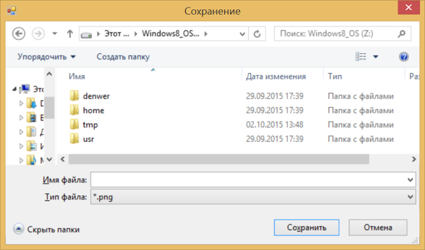
Рис. 10 Сохранение графика
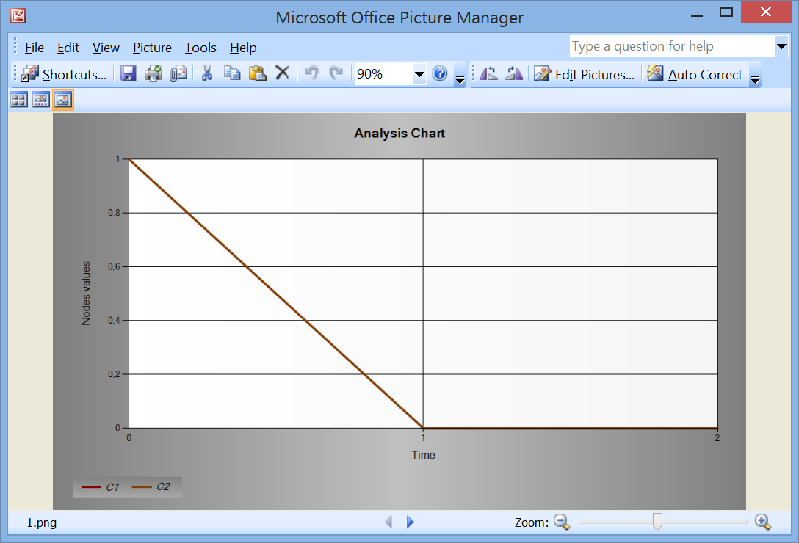
Рис. 10 Сохраненный график